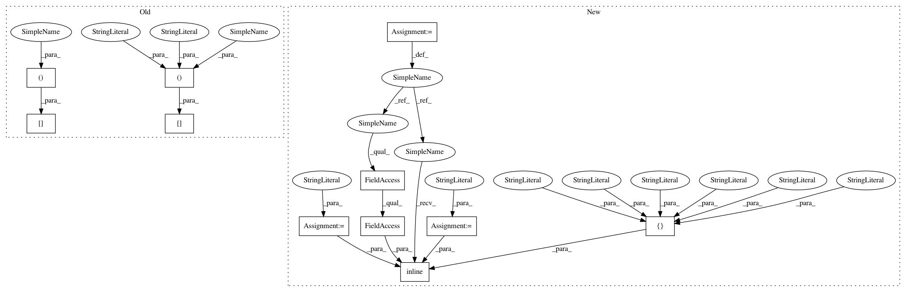

ce2884f0a7dc26087a5225bc92e39643920e3e16,GPy/kern/linear.py,linear,dpsi2_dZ,#linear#Any#Any#Any#Any#Any#,178
Before Change
// psi2_dZ_real[n, m, :] *= 2
// prod = (dL_dpsi2[:, :, :, None] * np.eye(Z.shape[0])[None, :, :, None] * (self.ZAinner * self.variances).swapaxes(0, 1)[:, :, None, :])
// psi2_dZ = prod.swapaxes(1, 2) + prod
psi2_dZ = dL_dpsi2[:, :, :, None] * self.variances * self.ZAinner[:, :, None, :]
target += psi2_dZ.sum(0).sum(0)
// import ipdb;ipdb.set_trace()
// psi2_dZ_old = (dL_dpsi2[:, :, :, None] * (self.mu2_S[:, None, None, :] * (Z * np.square(self.variances)[None, :])[None, None, :, :])).sum(0).sum(1)
// target += (dL_dpsi2[:, :, :, None] * psi2_dZ_real[:, :, None, :]).sum(0).sum(0) * 2 // (self.variances * np.dot(self.inner, self.ZA.T)).sum(1)
After Change
//dummy_target += psi2_dZ.sum(0).sum(0)
AZA = self.variances*self.ZAinner
code=
int n,m,mm,q;
//pragma omp parallel for private(n,mm,q)
for(m=0;m<M;m++){
for(q=0;q<Q;q++){
for(mm=0;mm<M;mm++){
for(n=0;n<N;n++){
target(m,q) += dL_dpsi2(n,m,mm)*AZA(n,mm,q);
}
}
}
}
support_code =
//include <omp.h>
//include <math.h>
weave_options = {"headers" : ["<omp.h>"],
"extra_compile_args": ["-fopenmp -O3"], //-march=native"],
"extra_link_args" : ["-lgomp"]}
N,M,Q = mu.shape[0],Z.shape[0],mu.shape[1]
weave.inline(code, support_code=support_code, libraries=["gomp"],
arg_names=["N","M","Q","AZA","target","dL_dpsi2"],
type_converters=weave.converters.blitz,**weave_options)
In pattern: SUPERPATTERN
Frequency: 3
Non-data size: 11
Instances
Project Name: SheffieldML/GPy
Commit Name: ce2884f0a7dc26087a5225bc92e39643920e3e16
Time: 2013-05-07
Author: james.hensman@gmail.com
File Name: GPy/kern/linear.py
Class Name: linear
Method Name: dpsi2_dZ
Project Name: SheffieldML/GPy
Commit Name: ce2884f0a7dc26087a5225bc92e39643920e3e16
Time: 2013-05-07
Author: james.hensman@gmail.com
File Name: GPy/kern/linear.py
Class Name: linear
Method Name: dpsi2_dmuS
Project Name: SheffieldML/GPy
Commit Name: ce2884f0a7dc26087a5225bc92e39643920e3e16
Time: 2013-05-07
Author: james.hensman@gmail.com
File Name: GPy/kern/linear.py
Class Name: linear
Method Name: dpsi2_dZ
Project Name: SheffieldML/GPy
Commit Name: dc33aa1b8c334ed5cd05d574aa4690a636a0cc17
Time: 2013-05-30
Author: james.hensman@gmail.com
File Name: GPy/kern/rbf.py
Class Name: rbf
Method Name: dK_dtheta